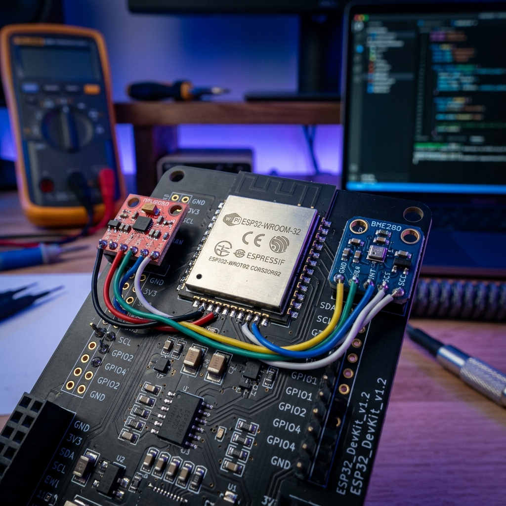

Donanım seviyesinden bulut mimarisine kadar tamamen uçtan uca tasarlanmış, gerçek zamanlı veri analizi ve uzaktan kontrol imkanı sunan profesyonel akıllı sistem projesi.
ESP32 ve yüksek hassasiyetli sensör ağları (sıcaklık, nem, toprak nemi) ile sahada gerçek zamanlı ve düşük gecikmeli veri toplanması.
Verilerin MQTT protokolü ve RESTful API'ler üzerinden güvenli ve asenkron olarak merkezi sunuculara iletilmesi.
Bulut tabanlı veri depolama, anomali tespiti ve kullanıcıya sunulan akıllı asistan ile sistemin proaktif yönetimi.
Proje, basit prototipleme kartlarının ötesine geçerek tamamen endüstriyel standartlarda tasarlandı. Güç yönetimi, sinyal izolasyonu ve çevresel dayanıklılık göz önünde bulundurularak geliştirilen anakart, kesintisiz 7/24 operasyon için optimize edilmiştir.

[SİSTEM] Bağlantı sağlandı. IoT Core API aktif.
[ASİSTAN] Komutlarınızı bekliyorum. (Örn: 'durum', 'sıcaklık', 'sistemi başlat')
Veri iletimi için hafif ve hızlı olan MQTT protokolü kullanılmaktadır. Uç cihaz, verileri güvenli bir şekilde MQTT broker'ına (sunucuya) iletir. Web arayüzü ise WebSocket veya REST API üzerinden bu broker'a abone olur.
Uç cihazdaki (ESP32) donanım yazılımı, FreeRTOS üzerinde çalışan C/C++ ile geliştirilmiştir. Bu sayede sensör okuma ve ağ iletişimi işlemleri eş zamanlı (multitasking) olarak engellemesiz (non-blocking) çalışabilmektedir.
Evet, sistem lokal ağ bağlantısına (Local LAN/WLAN) geçiş yapabilir. Dış internet kopsa bile, röleler ve sensörler daha önceden yüklenen kurallara (rule engine) göre otonom çalışmaya devam eder.